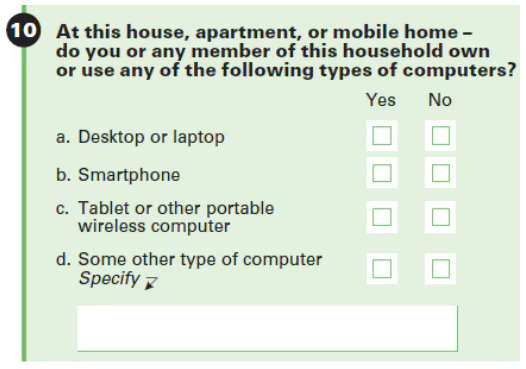
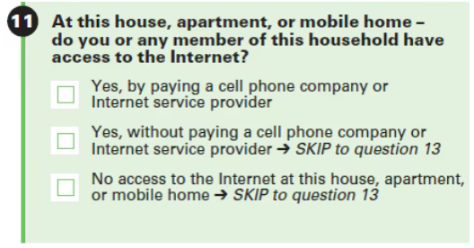
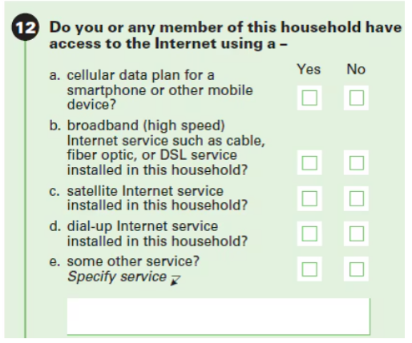

Census Training Report
Research Question
How does internet access vary across the United States, and which regions, despite high incomes or urban settings, still experience significant digital exclusion?
Why Internet Access Matters
Yes, in a world where the absence of internet can ground airlines, freeze Wall Street, or halt emergency services — digital access is not just a convenience, it’s a necessity.
Across the globe and right here in the U.S., there have been real moments where the internet’s absence caused chaos, economic loss, and even put lives at risk:
Major Incidents Where Lack of Internet Caused Harm
- Hurricane Maria – Puerto Rico (2017)
- The hurricane wiped out power and internet across the island.
- Residents couldn’t call for help, check weather updates, or contact family.
- Rural areas remained disconnected for months, delaying aid and recovery.
- Comcast/Xfinity Outage – United States (Nov 2021)
- A major ISP went down across multiple states.
- Millions lost access during work-from-home and virtual school hours.
- Remote workers, students, and telehealth services were all impacted.
- Ukraine-Russia War (2022–Present)
- Cyber and physical attacks damaged internet infrastructure in Ukraine.
- Emergency internet (via SpaceX Starlink) had to be deployed to restore connections.
About the Data: ACS 5-Year Estimates
This analysis uses data from the American Community Survey (ACS) 5-Year Estimates (2018–2022).
Why 5-Year ACS?
- Provides the most reliable and stable estimates, especially for small geographies like census tracts and rural counties.
- Covers broad population segments over multiple years — helpful in identifying trends.
- Offers uniform national coverage useful for consistent comparison across states and counties.
What Does the Census Ask?
Below are screenshots of the actual ACS survey questions that ask about computer and internet use. These responses form the basis for the data used in this analysis.
  
Images above sourced from Census.gov.
Note: Broadband, cellular data plans, satellite internet, and other services are grouped together in ACS responses — the survey does not distinguish between speed, type, or quality of access.
Explore the Map
This map allows users to zoom into any U.S. state and view the percentage of households without internet at both state and county levels.
Key Mapping Insights
- States in the South and West consistently show higher rates of digital exclusion.
- Mississippi has the highest rate of disconnected households (~21.6%).
- Utah has the lowest (~6.4%).
- Among counties, Holmes County, MS tops the list, while Douglas County, CO shows near-universal access.
Data Visualization
Internet Access Over Time (2017–2022)
This chart shows how the average percentage of households without internet access has changed over time across all 50 U.S. states.
{kind=link}
State-by-State Internet Gaps (2022)
This chart compares states based on their most recent ACS data — labeling each state’s share of households with no internet access.
{kind=link}
Data Analysis
Surprising Patterns in High-Income Regions
{kind=link}
Even in some of the wealthiest, most tech-savvy regions in America — from Silicon Valley to downtown Manhattan — a surprising portion of households still lack internet access.
This isn’t just a rural issue. In places like the Bronx and Brooklyn, nearly 1 in 5 households remain offline. Meanwhile, San Francisco and San Jose, hubs of global tech, show digital exclusion rates above 9%.
These gaps may be linked to:
- Language barriers
- Elderly populations
- Housing instability
- Privacy or security concerns
Plausible Reasons Behind Digital Exclusion
- Affordability and data plan costs
- Lack of devices (computers, routers)
- Elderly residents or digitally averse populations
- Language barriers in immigrant-heavy areas
- Distrust in data security or government programs
- Housing instability or shared living situations
Conclusion
This analysis highlights that digital exclusion is a complex, persistent issue, affecting both rural and urban areas — even in tech-rich or high-income regions.
- While internet access has improved over time, gaps remain deep and uneven.
- Mapping reveals regional clusters of disconnected communities often masked in national averages.
- Policy efforts need to go beyond laying fiber — tackling affordability, education, and awareness.
Limitations
- ACS data provides estimates, not exact counts.
- Internet access data doesn’t distinguish mobile vs broadband vs satellite.
- Some small counties or tracts had suppressed or missing values.
- The map uses static snapshots — it cannot capture temporal dynamics or speed/quality of access.
Further Questions
- How does internet access affect educational outcomes or employment rates?
- What are the barriers to adoption in areas that technically have internet infrastructure?
- Could programs like ACP (Affordable Connectivity Program) narrow this gap?
- What are the experiences of Native American reservations, often overlooked in national datasets?